| 北堀之内～越後川口編 その1 |
上越線あれこれ＞線路改良史＞このページ
|
大正11年、越後堀之内～越後川口間が開業した旧線は、この区間の途中にそびえる「中山」という山を避けるように、魚野川両岸に広がる河岸段丘上を大きく迂回するような格好で建設された。しかし、この迂回区間には半径300～400メートルのカーブが多数存在したため、列車の運転速度を向上させる際の大きなネックとなっていた。
そこで、当時上越線の随所で行われていた複線化工事の際、この区間は新たな経路を建設する事とし、昭和41年11月に現在線へと切り替わった。
北堀之内～越後川口間の線路改良は、延長2.5ｋｍにも及ぶ経路を新たに建設するといった大規模な改良工事で、そのほとんどが和南津トンネル・第四魚野川橋梁・中山トンネルという多大な資金と労力を伴なう工事で占められていた。しかし、新線の経路がほぼ一直線に建設されたおかげで、旧線と比べて距離を1.1Km短縮させる事に成功した事に加え、旧線とは比にならないほどの高速で駆け抜ける事が出来るようになったので、この改良工事がもたらした運転時間の短縮効果は大きかったであろう。
<旧線の線路概要>＊北堀之内駅から越後川口駅に向かう方向で書き進めています。
新旧線の分岐点は和南津トンネル手前の部分で（図の1の地点）、10‰の勾配を上りつつ半径400メートルの左カーブを描いてトンネルに進入。新線を建設する際、旧線の和南津トンネルのすぐ隣に新線の和南津トンネル（トンネル名は同じ/中越地震で大きな被害を受けた）が掘削され、新線のトンネル内は20‰の下り勾配になっている。
半径400メートルの左カーブを描きつつ旧和南津トンネルに進入した旧線は、トンネル内でわずかな直線があったあと、半径300メートルの左カーブとなってトンネルを抜け、地点2に出る。ここで10‰の上り勾配は終了し、2と3の間で勾配がレベルになるが、3から先は10‰の下り勾配へと転じ、そのまま魚野川橋梁7まで下り続けた。
地点4付近で左カーブが終了すると、すぐさま同半径の右カーブとなる。下の写真をご覧頂くとわかるのだが、現在、この付近は旧線跡をなぞるような格好で道路がある。ただ、旧線時代の勾配と現在の道路の勾配が全く逆になっている。ちょっと首をかしげたが、この付近を道路に転用する際、線路跡の下り勾配を現在の道路のように上り勾配にするほど、かなり大量の土砂を盛ったようである。というよりも、この付近の旧線はもともとあった小さな山（丘）を切り取って建設された経緯があるので、埋め戻したという表現のほうが適切かもしれない。いずれにしても、当時を知る地元のお年寄りのお話では、周囲の土地よりも一段低くなっている凹部に旧線の線路が敷かれており、通過する列車の屋根を見下ろす格好で見送っていたらしい。
長い右カーブを描きつつ切り取り区間を進んできた旧線だが、5から先は築堤区間へと変化し、3付近から続いてきた下り勾配も魚野川の直前でレベルとなる。そして、延長252メートルの魚野川橋梁を渡って対岸へと向かう。
<現在線の状況>
現在の上越線のルートは、互いに接している「和南津トンネル」と「第四魚野川橋梁」で、一気に魚野川対岸へと渡っている。
大正時代にこの区間の旧線を建設する際、ひょっとしたら現在線のようなルートも検討された可能性があるが、トンネルと橋梁が間髪入れずに連続するような建設工事は、当時の建設技術では困難だったのかもしれない。もしそうだとしたら、旧線開業から新線切替えに至る45年の間に大きく進歩した建設技術を、この区間で垣間見ていることになる。
・・・北堀之内～越後川口編その2へ続く
|
| 現在の様子 |
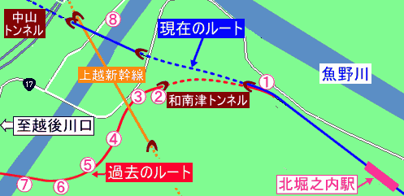
↑番号をクリックすると、その付近で撮った写真へジャンプ↑ |
*北堀之内から越後川口に向かう方向で順を追って掲載
*掲載している写真に描いてある赤いラインは旧線の推測位置を示す |
【地点1】
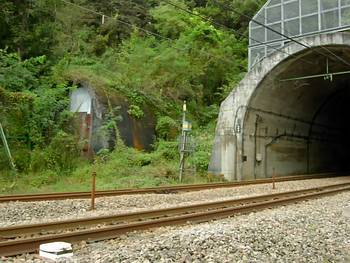 |
【地点2】
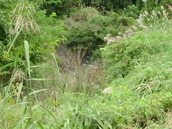 |
| ↑新旧の分岐点。入口がトタン板で塞がれている左のトンネルが、旧線で使用していたもの。新旧ともに、トンネル名は「和南津トンネル」。 |
↑雑草ばかりで何の写真だかわかりづらいが、中央にある何となくカマボコ状のものが、地点2の旧和南津トンネル出入り口。 |
|
↑地図へ ↑ |
【地点2】
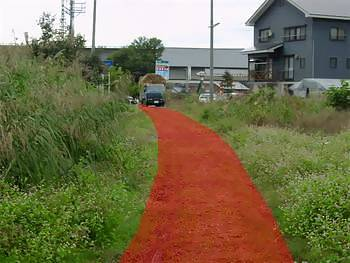 |
【地点3】
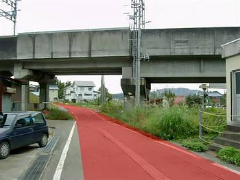 |
| ↑右上の写真と同じポイントで、越後川口方面に振り返って撮ったもの。旧線の勾配は、トンネル出口のこの付近でレベルとなっていた。 |
↑地点3の上越新幹線とクロスする付近。クロスした付近から先の道路が上り勾配になっているが、これは転用道路に大量に土砂が埋め戻された事と、上越新幹線の建設工事の際、クロス部分の道路が若干掘り下げられた為である。。本文でも書いた通り、実際の旧線はこの辺りから魚野川にかけて10‰の下り勾配が連続していた。 |
| ↑地図へ ↑ |
【地点4】
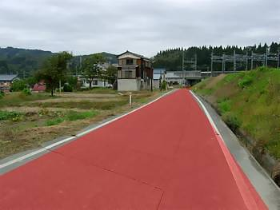 |
【地点4】
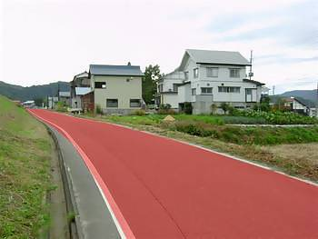 |
| ↑地点4から北堀之内方面を撮ったもの。左側には民家が建ち並び、一段高くなっている右側には田畑が広がっているが、これらの宅地や田畑はなだらかな傾斜を持つ河岸段丘を整地したものと思われる。前述の通り、この道路は旧線跡地に土を埋め戻して転用されたもので、実際の旧線はこの写真の高度よりも数メートル下のほうにあった。おそらく、かなり深い凹部を旧線が通っていたのではと思われる。奥の高架は上越新幹線。 |
↑左の写真と同じポイントで、越後川口方面を撮ったもの。緩やかな上り坂がまだ続いている。旧線時代が下り勾配だったのに対し、転用道路は上りになっているのだから、相当な量の土を埋め戻した事になる。
|
|
↑地図へ ↑ |
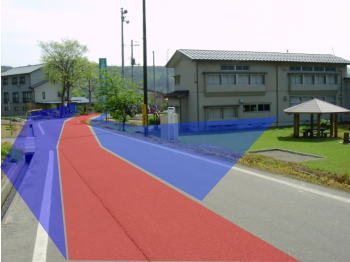 |
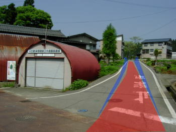 |
| 上記地点4と下記地点5の間から撮ったもの（あとから追加した画像）。越後川口方面を撮ったもので、右手に見える建物と緑地は和南津小学校跡地。青色の塗り潰しは、この辺りが切り取り区間だったのでその斜面を表現してみたもの。 |
これも上記地点4と下記地点5の間から撮ったもの。旧線時代、手前の赤茶けた道路に踏み切りがあったので、旧線の線路の高さはこの地点で一致する。つまり、ここが切り取り区間の終点である。周りの建物や道路を見る限りでは、旧線跡は結構埋め戻されたようである。 |
| ↑地図へ ↑ |
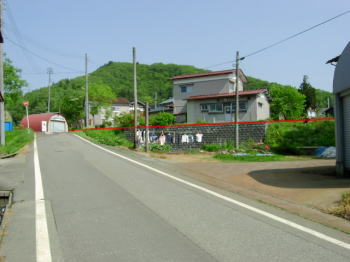 |
←左側に見える赤いカマボコ型の建物は、直上画像の赤茶のカマボコ型の建物と一致する。ここの踏み切りを境に、切り取り区間から盛土区間へと変化する。 |
|
↑地図へ ↑ |
【地点5】
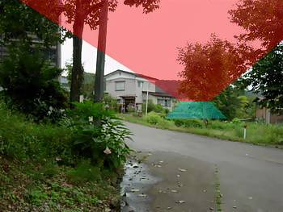 |
【地点6】
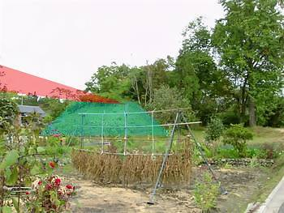 |
| ↑地点5から魚野川方面を撮ったもの。写真を左右に横切っている道路は旧線時代から存在していた可能性が高いが、もしそうであれば、ここで旧線と立体交差になっていたという事になる。画像ではわからないが、左手に向かう道路がこの先で急な上り坂になっている。立体交差時代の名残か。 |
↑地点6から地点5方面を撮ったもの。付近の宅地化により、地点5付近から続く築堤は、この部分から100メートルほど途切れた状態になっている。 |
| ↑地図へ ↑ |
【地点6】
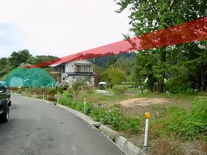 |
【地点6】
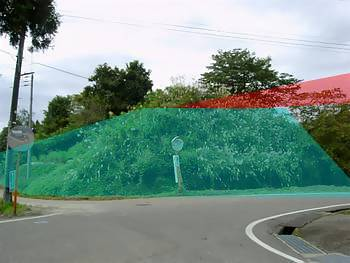 |
↑右上の写真と同じポイントから、魚野川方面を撮ったもの。築堤そのものの高さはそれほどでもなかったようである。
とても静かな旧線跡地を散策している際、旧線が現役だった時代にここをSLが通過していたという事を思うとし、なんとも言えぬ不思議な気分になった。
|
↑左の写真に写っている築堤に近寄って撮ったもの。この道路が旧線当時から存在したかどうかも不明だが、もしそうだとしたらやはり立体交差だったのだろう。手持ちの古い地図では、この辺りの集落への道路が一本しか記入されていないが、その道路がこの写真のものなのか、左上の写真に写っている道路なのか判断がつかない。場合によっては両方とも存在した可能性も考えられる。いずれにしても、踏切による平面交差ではなく、立体交差だった事は間違いない。 |
|
↑地図へ ↑ |
【地点7】
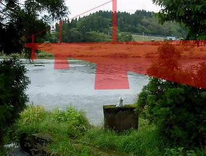 |
【地点8】
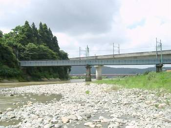 |
↑地点7の魚野川の川岸から、越後川口方面を撮ったもの。当時の魚野川橋梁は延長251.79メートルあり、単線時代の上越線の中で最も長い橋梁だった。ちなみに、現在最も長い橋梁は、土合～越後湯沢間にある延長345メートルの第二魚野川橋梁。
この写真の中央下に写っているコンクリート製の橋脚らしきものは農業用水路の水門で、旧魚野川橋梁とは全く関係ない。 |
↑現在の上越線の様子を、地点8の河川敷から北堀之内方面に向かって撮ったもの。手前の橋梁が上越線の第四魚野川橋梁で、その奥に見える高架橋は上越新幹線。さらにその奥に小さく写っている赤い橋は国道17号線で、旧線の魚野川橋梁はさらにその奥にあった。写真の右手（写ってません）にある山には、関越自動車も通っており、この付近は交通の要衝地のようになっている。
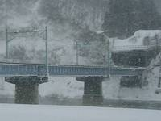 左の写真のほうが確認しやすいと思うが、第四魚野川橋梁の上り側（この写真だと右側）は、和南津トンネルの出口と接しており、真っ暗なトンネルを出ると、いきなり魚野川の景色が目に飛び込んでくる。
|
>> この付近の航空写真 <<
|
↑地図へ ↑
↑このページの先頭へ ↑ |
| 北堀之内～越後川口編その2へ続く |